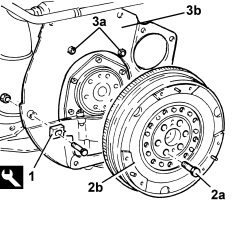
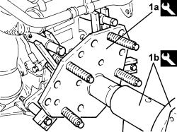

1004D40 ENGINE - POSITION ON STAND AND REMOVE
- Path
- Procedures > 10 ENGINE > 1004 ENGINE AND POWER UNIT > 1004D REMOVE ENGINE AND WASH > 1004D40 ENGINE - POSITION ON STAND AND REMOVE
- Kind
- repair procedure (removal / refitting; the operation number is the code)
- Applies to
- all engines; all production periods
- Interactive page
- https://sloeber94.github.io/elrnDB-aBrrSpdr/en/#/946001790
Applies to: engines: 2.2 JTS; all production periods
 Removing
Removing
 Refitting
Refitting- Remove the two manual gearbox locating bushes from the engine block.
2. Use a mechanical hoist with chains to lift the engine and place it on the overhaul stand.
Tool | Description | Function | Validity |
|---|---|---|---|
1871000000 | Overhaul stand | Engine overhaul |

Applies to: engines: 2.2 JTS; all production periods
Refitting
Removing- Use a hydraulic hoist with chains to remove the engine from the overhaul stand and place it on a platform.
- Remve the overhaul stand flange from the engine.
Applies to: engines: 3.2 JTS; all production periods
Rest on the stand
1. Fit the tool (1a) on the engine crankcase and, using a hydraulic lift, position the engine (1b) on the rotating overhaul stand.
Tool | Description | Function | Validity |
|---|---|---|---|
1871000000 | Overhaul stand | Engine overhaul |

Applies to: engines: 3.2 JTS; all production periods
Removal from the stand
- Support the engine using a hydraulic lift, undo the tool fastenings on the crankcase and then remove the engine from the overhaul stand.
Applies to: engines: 2.4 JTD 20v; all production periods
Removing
Refitting1. Fit the flywheel lock.
Tool | Description | Function | Validity |
|---|---|---|---|
1860846000 | Counter-torque | Flywheel lock |
2. Undo bolts (2a) and remove engine flywheel (2b).
- Remove the flywheel lock.
3. Undo bolts (3a) and remove flywheel guard (3b).

Applies to: engines: 2.4 JTD 20v; all production periods
1. Position engine on support tools (1a) and overhaul tools (1b).
Tool | Description | Function | Validity |
|---|---|---|---|
1871000000 | Overhaul stand | Engine overhaul |

Applies to: engines: 2.4 JTD 20v; all production periods
Refitting
Removing- Remove the engine from the tools used for supporting it.
Tool | Description | Function | Validity |
|---|---|---|---|
1871000000 | Overhaul stand | Engine overhaul |
- Place the rear flywheel guard in its housing and secure it using the bolts.
- Place the flywheel lock in its housing.
Tool | Description | Function | Validity |
|---|---|---|---|
1860846000 | Counter-torque | Flywheel lock |
- Place the flywheel in its housing and secure it by tightening the new bolts to the recommended torque.
Component | Fastening | dia | Value (daNm) | Validity |
|---|---|---|---|---|
Engine flywheel | Bolt (to be replaced) | M12 | 14.4 ÷ 17.6 | 2.4 JTD 20v |
- Remove the flywheel lock.
Topics that link to this page (29)
- 1004E10 ENGINE, REMOVED - REMOVE CYLINDER HEAD AND OIL SUMP FOR INSPECTION - INCLUDES POSITIONING ON STAND AND REMOVAL
- 1004E20 ENGINE - DISMANTLE AND REASSEMBLE FOLLOWING OPERATION 1004E10 - WASH AND CHECK DISMANTLED PARTS - REFIT CYLINDER HEAD AND OIL SUMP - DOES NOT INCLUDE REPAIRS TO CYLINDER HEAD AND AUXILIARY UNIT
- 1004E40 ENGINE, REMOVED - GENERAL OVERHAUL
- 1016D10 CYLINDER HEAD – R.R. AND REPLACE GASKETS
- 1016D14 CYLINDER HEADS - R + R AND REPLACE GASKETS WITH ENGINE REMOVED
- 1016D20 LEFT CYLINDER HEAD - R.R. AND REPLACE GASKET
- 1016D22 LEFT HAND CYLINDER HEAD -R+R AND REPLACE GASKET WITH ENGINE REMOVED
- 1016D24 RIGHT CYLINDER HEAD - R.R. AND REPLACE GASKET
- 1016D26 RIGHT HAND CYLINDER HEAD - R+R AND REPLACE GASKET WITH ENGINE REMOVED
- 1020A20 CRANKCASE OIL SUMP - R.R CLEAN SURFACES FOR SEALANT APPLICATION
- 1020A24 CRANKCASE OIL SUMP - R.R CLEAN SURFACES FOR SEALANT APPLICATION WITH ENGINE OR INTERFERING COMPONENTS REMOVED
- 1020D14 FRONT CRANKSHAFT OIL SEAL COVER - R.R AND REPLACE SEALS FOR VERSIONS WITH OIL PUMP ON CRANKSHAFT, TIMING SIDE
- 1028H10 CONNECTING ROD AND PISTON SET - R.R
- 1028H20 PISTON WITH CONNECTING ROD - R.R
- 1032A10 CHAIN GEARS AND TIMING SYSTEM COMPONENTS R R
- 1032A12 TIMING SYSTEM DRIVE CHAIN - R.R
- 1032C18 TIMING BELT MOVING TENSIONER - R.R.
- 1032C20 LEFT MOVING TIMING TENSIONER - R.R.
- 1032C24 RIGHT MOVING TIMING TENSIONER - R.R.
- 1032C36 LEFT FIXED TIMING TENSIONER - R.R.
- 1032C38 RIGHT FIXED TIMING TENSIONER - R.R.
- 1036E10 CAMSHAFTS FOR LEFT CYLINDER HEAD - R.R. ON VEHICLE
- 1036E14 CAMSHAFTS FOR RIGHT CYLINDER HEAD - R.R. ON VEHICLE
- 1036E18 CAMSHAFTS FOR LEFT OR RIGHT CYLINDER HEAD - R.R. ON VEHICLE
- 1036E20 CAMSHAFT FOR ONE CYLINDER HEAD, LEFT OR RIGHT - R.R. WITH CYLINDER HEAD REMOVED
- 1056F94 SYSTEM CABLE LOOM ON ENGINE - R.R.
- 1084B12 ENGINE OIL PUMP - R+R
- 5510C26 ENGINE RPM SENSOR - R+R
- 5510C45 DETONATION SENSOR (ONE REMAINING) - R.R. FOLLOWING OP.5510C44